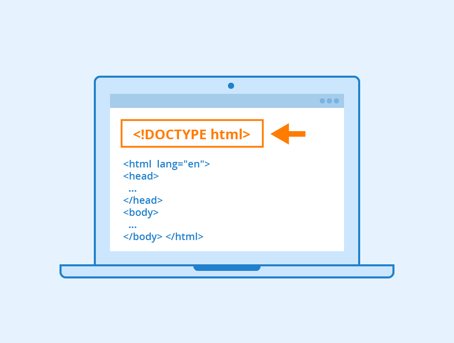
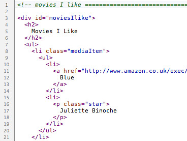

Na estrutura do nosso documento, antes de começar a colocar o conteúdo, inserimos a tag html. Dentro dessa tag, é necessário declarar outras duas tags: head e body.
A tag head contém informações como o título da página web, pode-se também ser inserida a favicon; o atributo charset, através da tag meta, o qual irá definir o conjunto de caracteres que serão utilizados na codificação; além da descrição do site que aparecerá ao usuário ao ser realizada a busca no navegador.
A tag body é basicamente o "corpo" do texto que será exibido ao usuário, é lá que é inserido todo o conteúdo da página.
Os atributos servem como características para as tags, sendo inseridos dentro da tag de abertura.
Um exemplo de atributo é o id, utilizado acima, que tem como função identificar uma tag.
As listas ordenas são executas no HTML a partir da tag ol e lista tópicos por meio de uma sequência numérica ou alfabética.
As listas não ordenadas são executadas a partir da tag ul e listam os tópicos sem necessariamente ser uma sequência lógica.
Esses dois tipos de listas dependem de outras tags dentro delas para poderem ser executadas da melhor forma, devendo cada "parágrafo" ser iniciado pela tag li, que tem a função de listar os tópicos.
